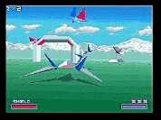

|

Review

Game Type: 3D chase-view shooter
Somewhat comparable to Space Harrier and Thunder Blade but the
similarity ends after the viewpoint. Starfox adds bank buttons that let you
turn your plane on its side for faster turns and stunts where you squeeze
through tight spaces. Also, on some stages the camera can be switched into
the cockpit. Only one weapon type but this can be powered up twice.
Gameplay: 90/100
Dive, bank, swerve, blast! A 3D shooter usually means a shooter with zero
playability but Starfox manages to overcome this. Half the reason is the bank
buttons - you can use L and R to turn the Arwing on its side, or press twice
quickly for a barrel roll that reflects some bullets. This lets you swoop back and forth across the
screen with a finesse it would take months to achieve in other games.
In most other 3D shooters your shot goes straight ahead from your plane, but
in Starfox your nose always points in the direction you're heading, so your
shots can fly at an angle. It sounds confusing but it's surprisingly intuitive.
There are 20 stages (6 on each of 3 courses plus 2 secret rounds) so even once
you master the control there's still plenty to do. People gripe about only being
able to move around within a set path but I think it would be just another
flight sim if you could.
Graphics: 70/100
No Gouraud shading, almost no texture maps, bad popup, and the framerate isn't very fast.
Though it was state-of-the-art when it was released the 32-bit systems
put the graphics to shame now. But the FX chip gets the job done, and if you
still don't own a next-gen system you may be sufficiently wowed.
Sound: 90/100
If you're picky about this sort of thing you may not like the sampled sound
of the strings in the music, but if you don't like this you probably didn't
like Chrono Trigger or Secret of Mana's music either (loser). I for one find
McCloud's theme to be one of the most inspiring in all of videogaming. The stereo
effects as enemy planes shoot past you are great.
Overall: 90/100
Have a Super Nintendo? You need to get Starfox. That simple. (Well, I'm still
trying to convince Shidoshi of this but he's just a raving anti-dub otaku. *Grin*)
It's lengthy, laden with action, and just all-around cool. I eagerly await the
N64 version.
|